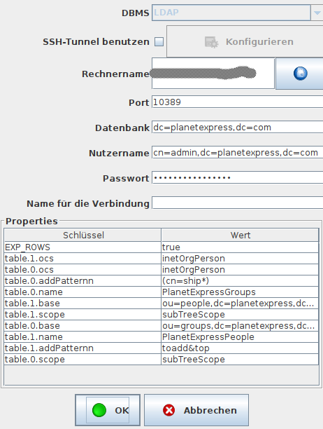
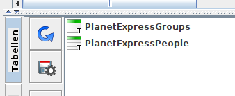

sQLshell Support für LDAP II

Ich habe hier vor kurzem bereits über die Integration von LDAP in die sQLshell berichtet. Diese wurde nun weiter verbessert.
Bisher konnte man in Verzeichnissen mittels SQL-Syntax suchen und - wenn die Abfragen keine leeren Ergebnisse ergaben - mit den Mitteln der sQLshell Auswertungen auf den gelieferten Ergebnissen anstellen - sie zum Beispiel der Reporting-Engine der sQLshell zuleiten.
Bisher war es nicht möglich, mit Tabellen zu arbeiten - die entsprechende Komponente der sQLshell blieb bei Verbindungen mit LDAP-Verzeichnissen bisher einfach leer. Ich habe bereits im vorhergehenden Artikel zu diesem Thema darüber geschrieben, dass die verwendeten Bibliotheken sehr alt sind. Sie werden schon seit geraumer Zeit nicht mehr gewartet - dennoch fand ich einen interessanten Aspektin der - ebenfalls veralteten - Dokumentation: Die Möglichkeit, durch Angabe von connection Properties Pseudo-Tabellen zu definieren. Das machte mich neugierig und ich versuchte mittels der Dokumentation diese Funktionalität selbst zu nutzen.
Das frustrierte mich sehr schnell, da zunächst einmal eine Property mehr für jede Tabelle definiert werden musste, als in der Dokumentation angegeben. Zu dieser Property konnte ich weder im Internet noch im Quelltext das erwartete Format noch dessen Bedeutung ermitteln. Das war zunächst auch gar nicht schlimm, da ich bereits bei dem Versuch, diese Properties anzugeben durch einen See an NullPointerExceptions waten musste.
Nachdem ich mich ein wenig abgekühlt hatte, forkte ich das ursprüngliche Repository und begann, an meinem Fork zu arbeiten:
Ich sorgte dafür, dass die ominöse fünfte Property in der Tabellendefinition optional ist - man muss sie nicht länger angeben. Weiterhin kümmerte ich mich um die vielen Exceptions, führte (Log4j-)Logging ein und sorgte dafür, dass die Tabellen überhaupt nutzbar wurden: in der Implementation von DatabaseMetaData gab die Methode getTables() nämlich immer null zurück - egal, wie viele Tabellen man über Verbindungsproperties definiert hatte.
Mit dem aktuellen Stand kann man Tabellen wie folgt definieren (das Properts addPattern ist das aktuell optionale und muss nicht gesetzt werden):

Konfiguration von "Tabellen" in LDAP-VerzeichnissenDaraufhin entstehn zwei Tabellen, deren Inhalte man nun wie gewohnt durch Doppelklick einsehen kann (Ich benutze hier wieder das bereits bekannte Docker-Image zum Test):

Pseudo-"Tabellen" in LDAP-VerzeichnissenDoch es ist nicht nur der Doppelklick - musste man sonst Abfragen zum Beispiel wie folgt formulieren:
§§SELECT dn, mail FROM subTreeScope;ou=people,dc=planetexpress,dc=com
genügt nun ein (vertrauteres)
§§SELECT dn, mail FROM PlanetExpressPeople
Artikel, die hierher verlinken
sQLshell Reporting für Apache Drill
08.08.2021
Ähnlich LDAP wurde die sQLshell mit Unterstützung für ein weiteres System ausgestattet, das keine klassische relationale Datenbank ist:


Vor 5 Jahren hier im Blog
-
35c3 - Meine Favoriten bisher
30.12.2018
Wie jedes Jahr habe ich auch diesmal wieder die Vorträge des 35c3 genossen - ich habe nicht alle gesehen, aber das hier ist die Auswahl meiner Favoriten aus denen, die ich gesehen habe:
Weiterlesen...
Tags
Android Basteln C und C++ Chaos Datenbanken Docker dWb+ ESP Wifi Garten Geo Git(lab|hub) Go GUI Gui Hardware Java Jupyter Komponenten Links Linux Markdown Markup Music Numerik PKI-X.509-CA Python QBrowser Rants Raspi Revisited Security Software-Test sQLshell TeleGrafana Verschiedenes Video Virtualisierung Windows Upcoming...
Neueste Artikel
- Migration weg von Repsy
Ich habe Repsy verlassen.
Weiterlesen... - In eigener Sache mit Blick auf 2024
Dieses Jahr ist auch wieder rum. Zeit, nach vorne und Zurück zu blicken...
Weiterlesen... - 37c3 - Empfehlungen
Wow - es ist vier Jahre her, seitdem ich dieses Thema beackert habe. Aber endlich ist es wieder so weit: Meine Empfehlungen für Vorträge vom Chaos Communication Congress 2023 - vulgo: 37c3:
Weiterlesen...
Manche nennen es Blog, manche Web-Seite - ich schreibe hier hin und wieder über meine Erlebnisse, Rückschläge und Erleuchtungen bei meinen Hobbies.
Wer daran teilhaben und eventuell sogar davon profitieren möchte, muß damit leben, daß ich hin und wieder kleine Ausflüge in Bereiche mache, die nichts mit IT, Administration oder Softwareentwicklung zu tun haben.
Ich wünsche allen Lesern viel Spaß und hin und wieder einen kleinen AHA!-Effekt...
PS: Meine öffentlichen GitHub-Repositories findet man hier - meine öffentlichen GitLab-Repositories finden sich dagegen hier.